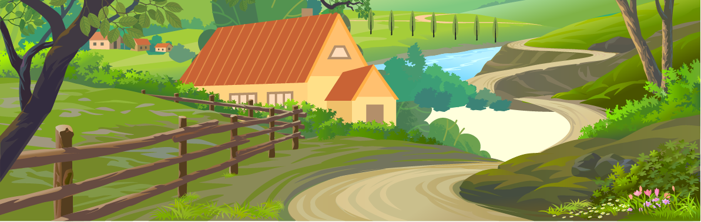

Um dia desses, dentro de um livro rosa com glitter da biblioteca da escola, eu descobri uma carta antiga sobre uma mansão mágica, escondida por flores e bonecas. Nessa carta, a autora deixa algumas pistas para encontrar essa cidade e eu decidi segui-las!
Você começa sua jornada em Mabilu, andando pela praia ao amanhecer para encontrar a primeira pista.
Em Barbielandia, você visita o monte de Rushmore. Na carta, uma das pistas indica que para localizar a entrada para a cidade perdida você deve procurar a próxima pista em um dos rostos de boneca esculpido nas pedras do monte. Por qual rosto você começa?
Perto da cesta gigante na areia, você encontra uma antiga inscrição apontando que a próxima pista está localizada no shopping.

Você decide que a aventura é grande demais e volta para casa, mas sempre se pergunta o que teria encontrado.
No monte de Rushmore, você descobre um mapa antigo escondido dentro do nariz da boneca do meio, apontando que a próxima pista está no Shopping de Malibu.
Explorando o shopping, você encontra uma loja abandonada com um túnel, mas ele leva a uma sala sem saída.
Em Malibu, a busca pela cidade perdida se intensifica. Você se depara com uma loja de glitter bem chamativa e do outro lado uma loja só de roupa rosa.
De volta às pedras, você finalmente encontra o mapa antigo. Agora, para o shopping de Malibu!
A loja de glitter leva você a uma cachoeira escondida com inscrições antigas que revelam a entrada da mansão mágica.
A loja de roupas rosas termina em uma área pantanosa. Apesar de belas vistas, não há sinais da DreamHouse aqui

Dentro da mansão DreamHouse você descobre várias amigas, Barbie, Chelsea e outras, e decide ficar
Retornando e escolhendo a loja de glitter, você finalmente encontra a cachoeira escondida e as inscrições que levam à Dream House.